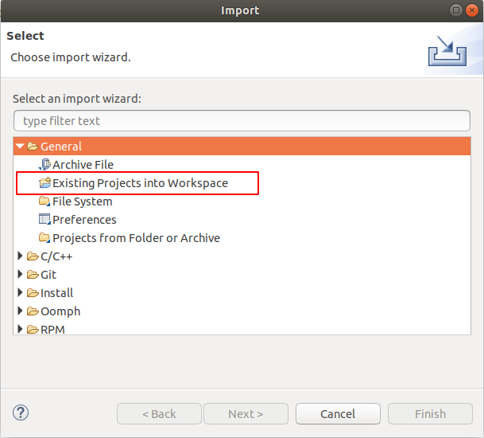
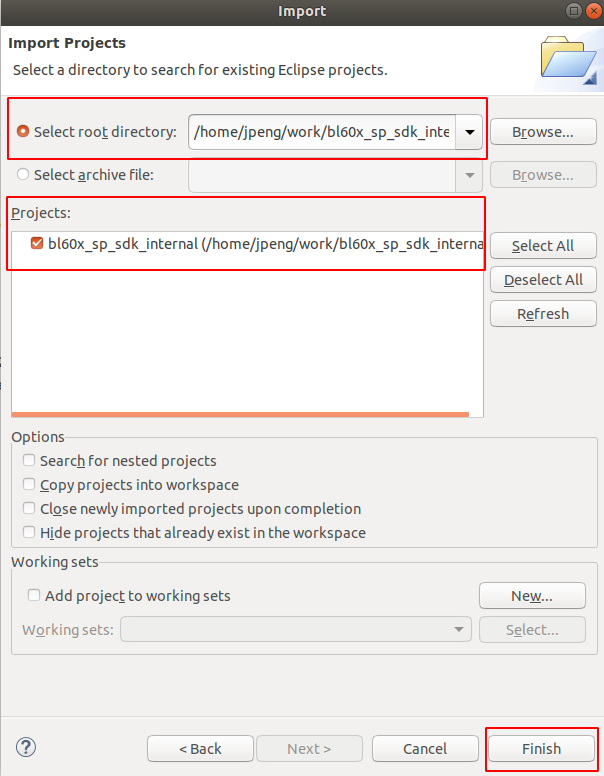
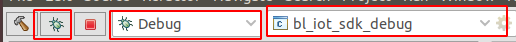
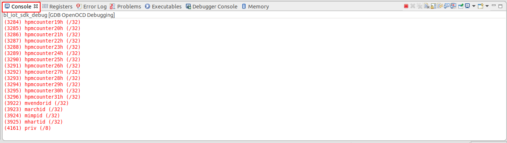
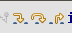
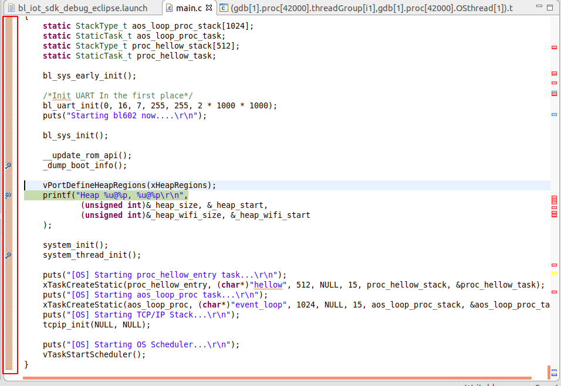

Eclipse
本文档介绍Eclipse的使用。
导入工程
- 首先启动
eclipse，打开工具栏上的File > import，选择General菜单下的Existing Projects into Workspace选项导入工程。


Debug
- 首先让板子跑起来，确认eclipse左上方的工具栏配置如下图1所示，然后点击第一个红色框框起来的图标
debug按钮，eclipse会先编译工程，完成后eclipse下方的Console窗口可以看到如下图2所示log。


- 使用快捷键
F8resume一下，可以看到程序停在void bl702_main()主函数处，此时可以点击下图中的3个按钮。其含义分别为- 第一个Step Into（F5） 单步执行，遇到子函数就进入并且继续单步执行；
- 第二个Step Over （F6）在单步执行时，在函数内遇到子函数时不会进入子函数内单步执行，而是将子函数整个执行完在停止，也就是把子函数整个作为一步；
- 第三个Step Return（F7）在单步执行到子函数内时，用Step Return就可以执行完子函数余下部分，并返回上一层函数。


- 可以在
c代码窗口最左边橙色条处双击增加、删除断点。

- 还可以通过查看右边的
Disassembly窗口查看对应的汇编（该窗口没有的话可以通过最上方工具栏Window > show view > Disassembly添加）。